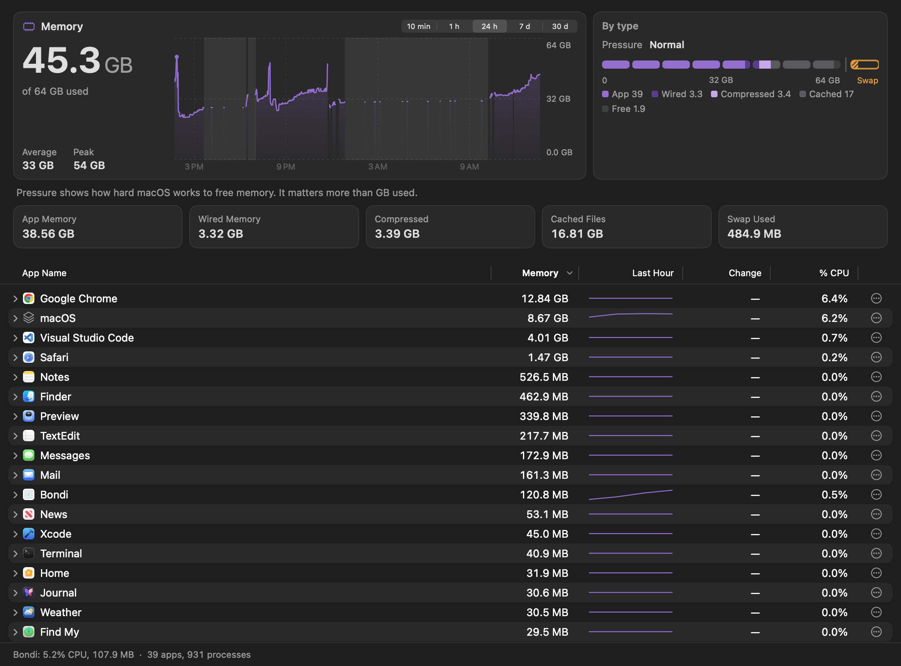
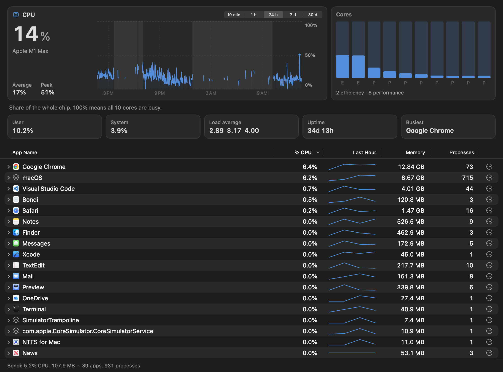

The AI that tells you why your Mac is slow.
Activity Monitor lists 1,000 cryptic processes. Bondi groups them into the apps you know, finds what's quietly holding your memory, and says what's wrong in one plain sentence. The AI runs on your Mac, not in the cloud.
250 of 250 left at $6.99then $29.99One-time purchase7-day free trial
Try it
Everything in the menu bar, one click away.
Click the tabs. The popover shows how your Mac is doing, what's using it, and one sentence about what matters right now. The main window has the full detail and 30 days of charts.
In Bondi, this asks first: "Stop Vite in shop? It frees about 612 MB." Nothing is ever stopped without your click.
The numbers here are made up and drift on their own. Bondi's real ones are measured on your Mac and never leave it.
Apps, not processes
966 rows, or 39 you recognise.
A browser is dozens of helper processes. So is your code editor. Activity Monitor lists every one of them separately, so no single row looks big.
Bondi adds each helper to the app that started it. Chrome is one row with its real total, 12.23 GB across 80 processes, and "what's using my memory?" has a one-glance answer. Both lists are one real reading of the same Mac.
What Bondi says
One sentence, with the real numbers.
Bondi measures every figure and writes the sentence around it. The on-device AI only adds the plain-English part, so it can't invent a number. These are real lines from Bondi's tests.
Memory is critically low. Bionic holds 21.49 GB with Qwen3.8 27B loaded.
Your Mac is working hard. Xcode is using 61% of the CPU.
Running on battery. The battery is at 23% with 1h 10m left, and Google Chrome is using the most power, 6.4 W.
You asked: "Which app used the most memory this week?" Over the last 7 days, Google Chrome used the most memory, 10.18 GB on average, then macOS (5.81 GB) and Visual Studio Code (3.19 GB).
For developers
Finds the servers and models you forgot.
A Vite server from last week. A 20 GB model still loaded in LM Studio. A Docker container nobody stopped. Bondi's Stack tab lists every dev server by project and port, every loaded local model, and every container, with the memory each holds and how long it's been idle. Stop any of them in one click, after a confirmation.
By project and port
Vite, Next.js, Rails, Django, Wrangler and more, found from their listening ports and grouped under the project folder they run in.
Models holding memory
LM Studio, Ollama and llama.cpp: which model is loaded, how big it is, and whether anything is using it right now.
Containers too
Running containers and what they hold, read from Docker on your Mac and never sent anywhere.
Everything else
Every metric that matters, in words you already use.
"Why is my Mac slow?"
One click answers from what Bondi measured: the likely cause, anything idle holding memory, and what changed in the last hour.
Ask about yesterday
"What drained my battery yesterday afternoon?" Bondi looks through 30 days of history on your Mac and answers with the figures.
One cause, one fix
When memory runs short or the CPU stays pinned, the menu bar names what's responsible and offers one fix. It always asks first.
Activity Monitor's terms
App Memory, Wired, Compressed, Cached Files, memory pressure and % CPU, matching Activity Monitor within 5%.
GPU, Neural Engine, fans
Graphics and Neural Engine load, temperatures, battery health, and a fan boost that never runs slower than Apple's own control.
"What is this process?"
Plain notes on 125 common macOS processes: what each does, why it gets busy, and whether stopping it helps.
The main window
When you want the whole story.
Every section has charts from 10 minutes to 30 days, the figures Activity Monitor uses, and a table of apps you can open up into their processes.


Pricing
Buy it once. Keep it.
Try everything free for 7 days. Then one price, one Mac, no subscription. The on-device AI is included.
- Every feature, with updates
- One Mac; move it to another whenever you like
- On-device AI included, nothing uploaded
- Paddle handles payment, tax and your receipt
The first 250 licenses are $6.99. After that, Bondi is $29.99.
Questions
Good to know
Does my data leave my Mac?
No. Usage history stays in a file on your Mac, and the AI runs on your Mac. Bondi only contacts our server to check your trial or license, and to look for updates. See the privacy policy.
Which Macs does it run on?
Any Mac with macOS 15 or later, Apple silicon or Intel. The AI uses Apple's on-device model where Apple Intelligence is available; other Macs can download a small free model from Bondi's Settings.
Will it slow my Mac down?
No. With its windows closed, Bondi uses about 0.3% of one CPU core. It only samples faster while you're looking at it.
Can Bondi quit apps on its own?
Never. Bondi suggests one fix at a time and asks before it quits, stops or unloads anything.
What happens after the trial?
The menu bar keeps showing your CPU for free. Everything else waits for a license.
Can I get a refund?
Yes. See the refund policy; Paddle, who handles the payment, issues it.